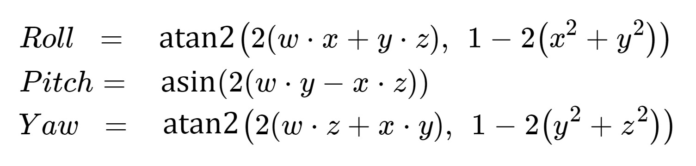

IMU Command
Tag 0x30-0x3f command for Inertial measurement unit (IMU) are explained in this page.
Keyword
NA: Not applicable, this command should no be sent by the sensor/application.
None: No data contained in this command, data length can be set as 0x00.
Tag 0x30
Meaning:
Start recording from IMU. Recording continue until user call the stop recording command tag0x31. Data replay from IMU will use tag0x35-0x38.Data format - app send:
Byte Length 1 1 1 1 1 Meaning Accel ODR Accel FS Gyro ODR Gyro FS reply format Output Data Rate (ODR), Full Scale (FS) and reply format code listed below, they should be supplement to 1 byte in the command.
Accel ODR / Hz code Accel FS / +-g code 80000x03 16 0x00 40000x04 8 0x01 20000x05 4 0x02 10000x06 2 0x03 500 0x0f 200 0x07 100 0x08 50 0x09 25 0x0a 12.5 0x0b 6.25 0x0c 3.125 0x0d 1.5625 0x0e
Gyro ODR / Hz code Gyro FS / +-g code 80000x03 2000 0x00 40000x04 1000 0x01 20000x05 500 0x02 10000x06 250 0x03 500 0x0f 125 0x04 200 0x07 62.5 0x05 100 0x08 31.25 0x06 50 0x09 15.625 0x07 25 0x0a 12.5 0x0b
Reply data format code reply tag Raw data 0x00 0x35Accel and Gyro value 0x01 0x36Quaternion 0x02 0x37Euler angle0x03 0x38If using reply format "Quaternion" or "Euler angle", recording always start from default orientation (IMU facing upward). Use command tag
0x32to set the zero position after start recording.Data format - app receive:
NA
Tag 0x31
Meaning:
Stop recording from IMU.Data format - app send:
NoneData format - app receive:
Same as send format.Same format will acknowledge to the user after command is executed.
Tag 0x32
Meaning:
Set zero to the recording IMU. Only works for "Quaternion" and "Euler angle" reply format. This command should send at IMU running.Data format - app send:
Byte Length 1 Meaning Zero Position
Zero Position Code Current Position 0x00 +X-axis 0x01 -X-axis 0x02 +Y-axis 0x03 -Y-axis 0x04 +Z-axis 0x05 -Z-axis 0x06 Zero position is the position that all pitch, roll and yaw angle equal to zero.
Note that zero position vector of the sensor is pointing upward (opposite to the direction of gravity). For example, if the ICs on sensor is upward, and this is the zero position, then +Z-axis should be set as the zero position.
Data format - app receive:
Byte Length 4 4 4 Meaning Zero Position X Zero Position Y Zero Position Z After zero position set, it will return the position it set. Zero will return when this command is called not under IMU recording mode.
Tag 0x35
Meaning:
Reply IMU data in raw data format.Data format - app send:
NAData format - app receive:
Byte Length 6 6 4 Meaning Accel data Gyro data TMST Accel and Gyro data separated in X, Y, Z axis, each axis has 2 bytes, total in 6 bytes. For more details conversion method please refer to the ICM42605 data sheet.
TMST is time stamp. It is 4 bytes unsigned integer , represent us between current data and last data.
Tag 0x36
Meaning:
Reply IMU data in accelerometer(ms^-2) and gyroscope(degree/s) value format.Data format - app send:
NAData format - app receive:
Byte Length 12 12 4 Meaning Accel value Gyro value TMST Accelerometer(ms^-2) and gyroscope(rad/s) value separated in X, Y, Z axis, each axis has 4 bytes, total in 12 bytes, all in Float format.
TMST is time stamp. It is 4 bytes unsigned integer , represent us between current data and last data.
Tag 0x37
Meaning:
Reply IMU data in quaternion data format.Data format - app send:
NAData format - app receive:
Byte Length 16 Meaning Quaternion Quaternion contains 4 Float value, 4 bytes each.
To convert the quaternion into Euler angle, assume quaternion values are w, x, y and z, and then use the equations below:

It is suggested to add some check code to make sure that the value is valid in asin and atan2, otherwise math error might happen due to the floating point precision issue.
Tag 0x38
Meaning:
Reply IMU data in Euler angle data format.Data format - app send:
NAData format - app receive:
Byte Length 4 4 4 Meaning Roll Pitch Yaw Each Euler angle return in Float. Unit is degree.